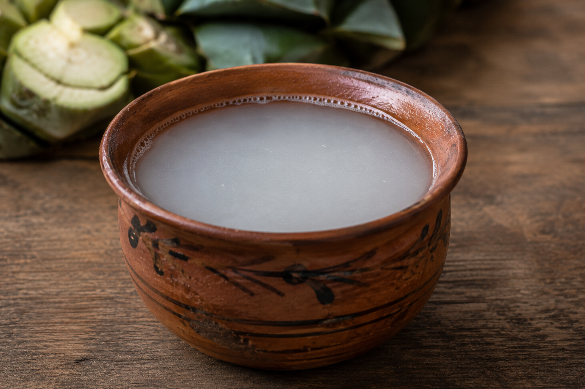

Pulque is a traditional Mexican alcoholic beverage produced through the fermentation of aguamiel, the sweet sap obtained from mature maguey plants. Its history extends back to pre-Hispanic Mesoamerica, where maguey and fermented beverages had important social, economic, and ceremonial roles. Pulque became particularly associated with the cultures of central Mexico and with religious traditions surrounding the maguey plant.
In Nahua tradition, the maguey was associated with Mayahuel, a deity connected with the plant. Pulque was therefore more than an ordinary beverage: it could have religious and ritual significance, and its consumption was subject to cultural norms and restrictions in different periods and communities. After the Spanish conquest, pulque gradually lost much of its exclusively ritual character and became a widely consumed beverage in colonial society.
The cultural importance of pulque also lies in the specialized knowledge necessary to produce it. The traditional producer, known as a tlachiquero, must understand the biological cycle of the maguey, recognize when the plant has reached maturity, prepare its central cavity correctly, extract the sap, and manage the fermentation. This knowledge has traditionally been transmitted through generations.
Unlike tequila or mezcal, pulque is not produced by distillation. It is a fermented beverage. This distinction is fundamental because its production preserves the biological activity of microorganisms responsible for transforming the sugars in aguamiel into alcohol, acids, and other compounds.
Traditional natural pulque requires remarkably few ingredients:
Different species and varieties of maguey may be used for pulque production, particularly in central Mexico. The plant generally requires many years to mature before aguamiel can be harvested. Mexican agricultural authorities report maturation periods that may range approximately from eight to fourteen years, depending on the variety.
Pulque production begins long before fermentation.
First, a mature maguey is prepared by interrupting the development of its central flowering stalk, known as the quiote. A cavity is then created and periodically scraped in the center of the plant. Instead of directing its stored resources toward flowering, the plant begins accumulating sweet sap in this cavity.
The liquid that accumulates is called aguamiel, literally “honey water.” Traditionally, the tlachiquero extracts it using an elongated hollow instrument called an acocote. The sap may be collected twice a day during the productive period of the plant.
The fresh aguamiel is then transferred to fermentation containers, traditionally located in a place known as a tinacal. Natural communities of yeasts and bacteria begin metabolizing its sugars. Traditional production may also introduce a portion of mature pulque as a fermentation starter. The transformation can occur rapidly, and Mexican agricultural sources describe traditional fermentation taking approximately a day, although the exact duration varies according to temperature, microorganisms, technique, and the desired final product.
The resulting beverage is generally milky white, slightly acidic, mildly alcoholic, and somewhat not viscous. Fresh pulque continues to ferment after production, which means that its flavor, acidity, and alcohol content change with time.
Pulque illustrates the sophisticated use of the maguey plant in Mesoamerican societies. Maguey was historically useful not only for beverages but also for fibers, construction materials, tools, food, wrapping materials, and other products. Pulque production therefore belongs to a much larger system of ecological and agricultural knowledge surrounding the agave landscape.
Today, traditional production remains especially associated with regions of central Mexico such as Hidalgo, Tlaxcala, the State of Mexico, and parts of Mexico City, where pulque continues to form part of local cultural identity. However, over time, the number of people who possess the traditional knowledge required to properly extract aguamiel and produce pulque has declined. As fewer generations learn the specialized techniques of the tlachiquero, this centuries-old tradition faces the risk of gradually disappearing.